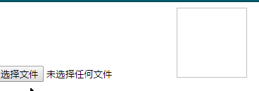

利用h5的api可以实现选择文件并实现预览
方法会读取指定的 Blob 或 File 对象。读取操作完成的时候，readyState 会变成已完成DONE，并触发 loadend 事件，同时 result 属性将包含一个data:URL格式的字符串（base64编码）以表示所读取文件的内容
<script src="./vue.js"></script> <input type="file" @change="uploadImg" ref="img" /><img id="img" />var vm = new Vue({
el: '#app',
methods: {
//change事件
uploadImg(el) {
//根据ref得到图片文件
var file = this.$refs.img;
//使用h5的读取文件api
var reader = new FileReader();
reader.readAsDataURL(file.files[0]);
//读取完成后触发
reader.onload = function () {
//改变img的路径
document.querySelector("img").src = this.result;
};
}
},
})
更多内容关注我的个人博客林中小屋